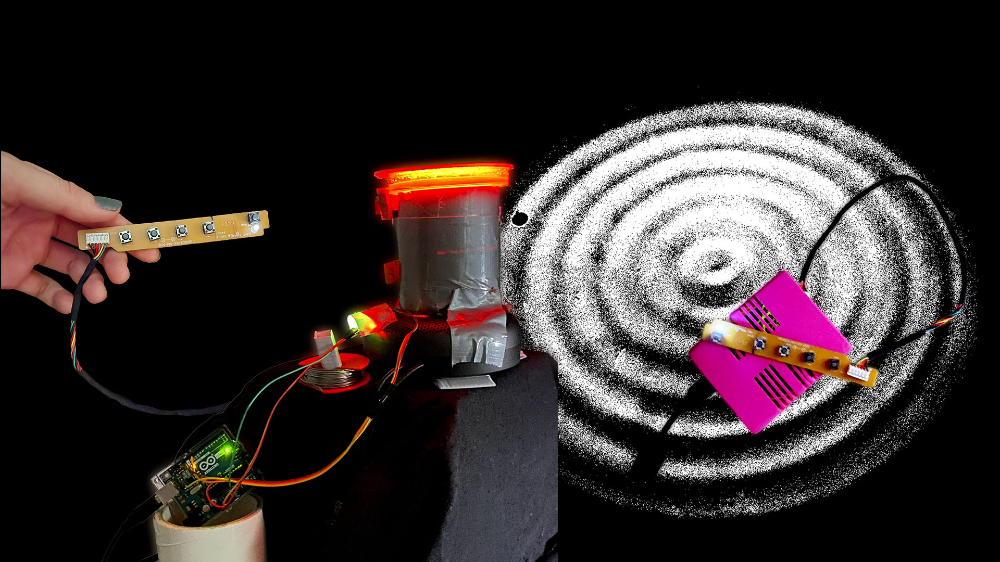
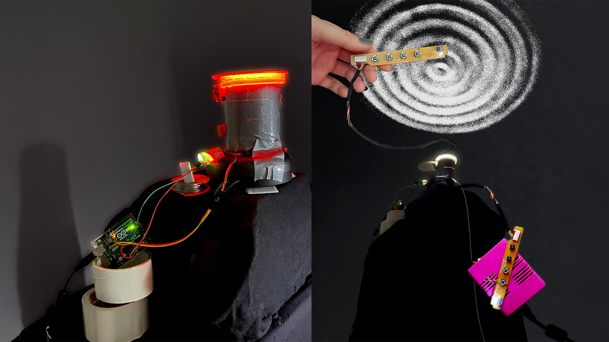
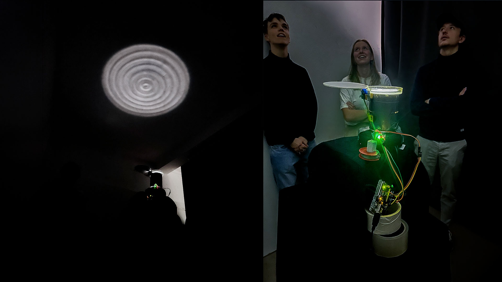
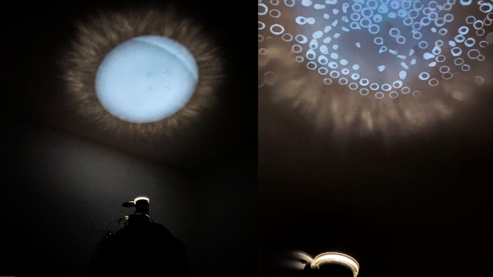
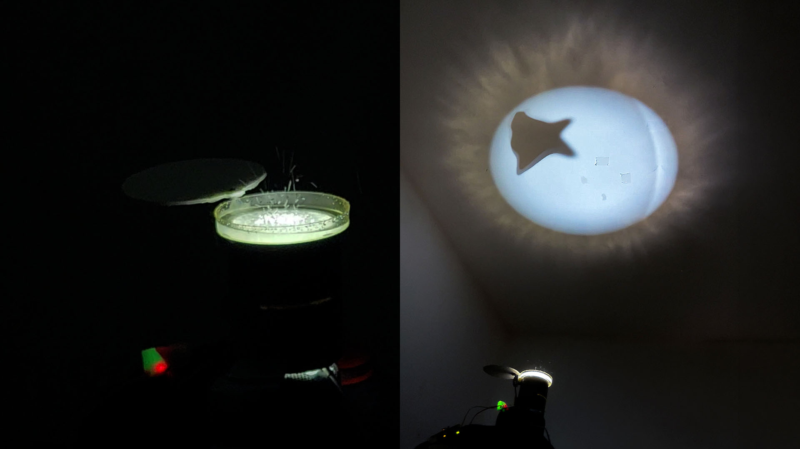

Echo
Novembre 2024
Plonger dans le son, le voir prendre forme.
Echo est une installation intéractive qui raconte l'ouverture d'un portail avec un monde exterieur mystérieux.
Un clavier customisé permet d'intéragir avec ce monde, en envoyant des sons.
Le dispositif transforme alors les vibrations sonores en ondes visibles, en les faisant traverser l’eau.
Sous l’effet de la lumière, ces mouvements deviennent des motifs projetés au plafond.
Chaque son révèle sa propre signature visuelle.
Réalisation en collaboration avec Lucie Pensivie et Emelyne Phung
#bidouilles
- carte Arduino Uno
- keyboard 5 touches récupérées
- servo moteur
- capteurs sonores
- plexiglass
- rouleaux de scotch
- lampe torche de vélo
- carton plume
- colle chaude
- enceinte Bluetooth
- et de l'eau (et parfois de l'huile)



